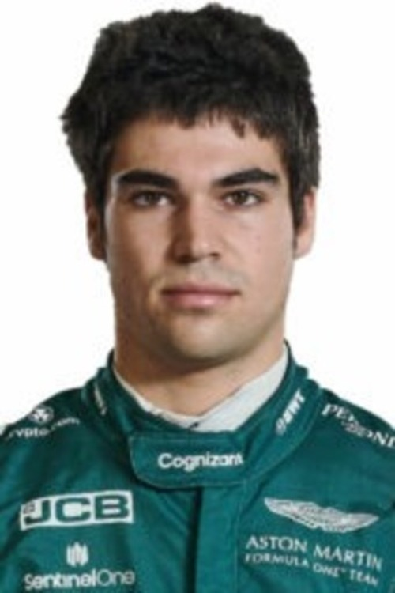

F1 Piloto
index
piloto
noticias
calendario
metereologia
circuito
viajes
juegos
Lance Stroll Aston Martin Racing
Datos personales
Lance Strulovitch
Dorsal número 18
Nacido en Canadá en 1998
Reside en Canadá
Aficiones
Correr
Andar en vicicleta
Golf
Jugar a videojuegos
Coleccionar coches

Tabla de este año:
Puntos
Posición
Poles
Victorias
Podios
286
6º
4
2
9
Resultados más destacados de los últimos 3 años
Año 2023
Arabia Saudí:
Escuderia: Aston Martin.
Puntos de carrera: 20.
Posición: 8º.
Mónaco:
Escuderia: Aston Martin.
Puntos de carrera: 20.
Posición: 8º.
Japón:
Escuderia: Aston Martin.
Puntos de carrera: 18.
Posición: 10º.
Año 2022
Italia
Escuderia: Aston Martin.
Puntos de carrera: 18.
Posición: 18º.
EEUU
Escuderia: Aston Martin.
Puntos de carrera: 18.
Posición: 15º.
Azerbaiyán
Escuderia: Aston Martin.
Puntos de carrera: 16.
Posición: 17º.
Año 2021
Bélgica
Escuderia: Aston Martin.
Puntos de carrera: 20.
Posición: 8º.
Brasil
Escuderia: Aston Martin.
Puntos de carrera: 20.
Posición: 14º.
Azerbaiyán
Escuderia: Aston Martin.
Puntos de carrera: 19.
Posición: 13º.
Presentación
Es un piloto de automovilismo canadiense.1 Ganó los campeonatos de Fórmula 4 Italiana
en 2015 y Fórmula 3 Europea en 2016. Disputó las temporadas 2017 y 2018 con Williams
en Fórmula 1, en 2019 y 2020 fue piloto de Racing Point. Actualmente es piloto de la
escudería Aston Martin F1 Team.
Equipos en los que ha participado
Ford Chip Ganassi Racing
Williams Martini Racing
Racing Point Force India F1 Team
Prema Powerteam
M2 Competition
Jackie Chan DCR Jota
SportPesa Racing Point F1 Team
BWT Racing Point F1 Team
Aston Martin Cognizant Formula One Team
Aston Martin Aramco Cognizant Formula One Team
Aston Martin Aramco Formula One Team
Conceptos
pit stop
Parada de mantenimiento estratégica
pole
Posicion de salida adelantada
rake
Inclinación del coche de Fórmula 1 desde el morro hasta la parte trasera, y quizás esté más asociado con Red Bull y su concepto de monoplaza desde 2009.
efecto suelo
Es un efecto que aprovecha el vehiculo para mantener un mejor agarre
Drag
Agarre del vehiculo
Video del piloto
Audio del piloto